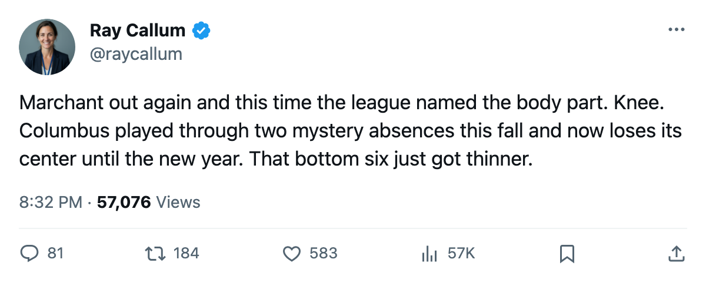
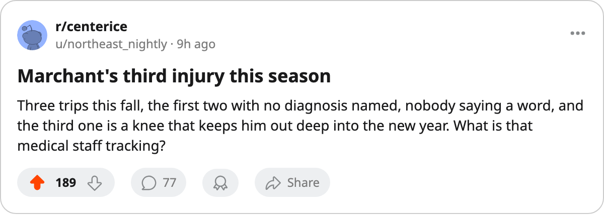

Injury Report: Marchant's Third Trip Keeps Columbus's Center Out Until January 30
Two Blue Jackets went down over the weekend, and the center with three absences this fall is the one who can't be replaced tonight.
 Ray CallumSenior correspondent · Home Ice Network
Ray CallumSenior correspondent · Home Ice Network Todd Marchant82 is out until January 30 with a knee, his third trip to the injured list this season. The
Todd Marchant82 is out until January 30 with a knee, his third trip to the injured list this season. The  Columbus Blue Jackets center carries an 84 in the Book. The league named a body part on this spell. The two earlier absences this fall carried no designation.
Columbus Blue Jackets center carries an 84 in the Book. The league named a body part on this spell. The two earlier absences this fall carried no designation.
Hannes Hyvonen68 went down on November 17 with a groin and returns December 6. Columbus lost the same night, 4-3 in overtime at  Dallas Stars.
Dallas Stars.
The Blue Jackets reshuffled the bottom of their depth chart.  Adam Mair67 entered at fourth-line right wing. Kent McDonell67 moved from the fourth line to the third.
Adam Mair67 entered at fourth-line right wing. Kent McDonell67 moved from the fourth line to the third.  Dimitri Kalinin82 slid up to the second defensive pairing.
Dimitri Kalinin82 slid up to the second defensive pairing.  Jean-Luc Grand-Pierre75 shifted to the third pairing, and
Jean-Luc Grand-Pierre75 shifted to the third pairing, and  Josh Holden70 and Tyler Wright78 each moved one slot down the forward lines.
Josh Holden70 and Tyler Wright78 each moved one slot down the forward lines.
Marchant's 3 spells account for 3 of Columbus's 13 injury absences this season. The club has lost 95 days to injury, the 7th most in the league. The knee keeps him out until January 30, well past the return dates on any of the other 12 Blue Jackets absences.
Marchant and Hyvonen cover center and right wing, and their simultaneous absence thins Columbus's middle six. The Blue Jackets are 7-5-2, 24 points, and 4th in the Western Conference. The losing streak is 3, all since November 12.
Columbus hosts  San Jose Sharks tonight, the 3rd meeting of a series that sits 1-0-1 to Columbus with 4 goals each side. Both prior meetings were decided by one goal. San Jose has lost 2 days to injury all season, the fewest in the league, and
San Jose Sharks tonight, the 3rd meeting of a series that sits 1-0-1 to Columbus with 4 goals each side. Both prior meetings were decided by one goal. San Jose has lost 2 days to injury all season, the fewest in the league, and  Evgeni Nabokov87 has started 14 of 16 games at 88 percent.
Evgeni Nabokov87 has started 14 of 16 games at 88 percent.

